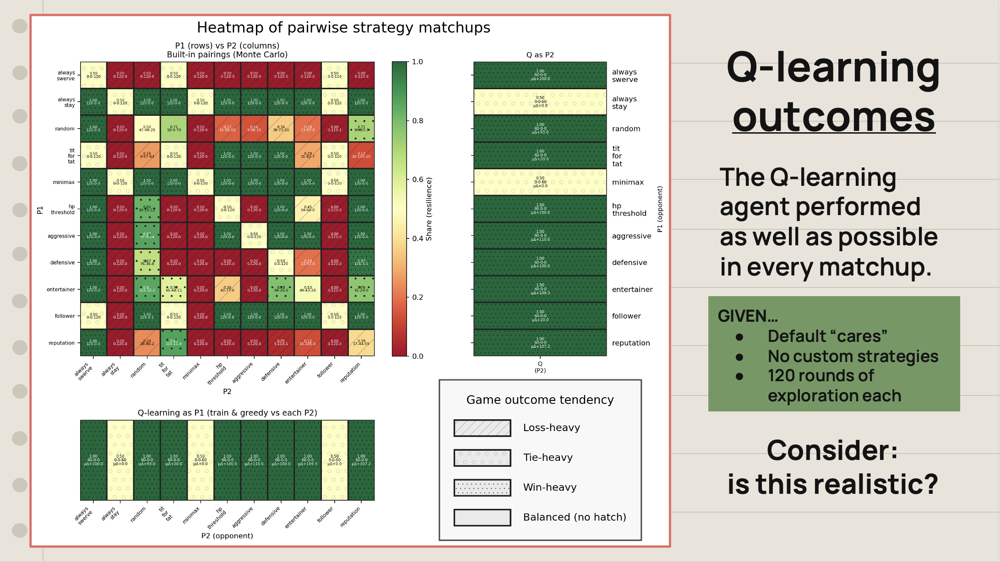
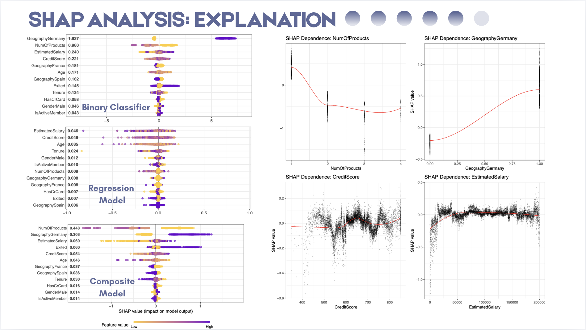

02
NLP
Bob Dylan Lyrics Analysis
Trying to capture semantic similarity between Dylan songs using bag-of-words, TF-IDF, and embedding analyses.
nlp

Trying to capture semantic similarity between Dylan songs using bag-of-words, TF-IDF, and embedding analyses.
Framework for abstracting the game-theoretical scenario of "chicken" to more complex games and strategies. Built as part of an AI & agentic programming class.





Predicting bank account balance based on anonymized, synthetic churn data. I was responsible for the SHAP feature analysis.


My team's submission for SWYD-style data science competition @ Duke University. Analyzed ER data, recommending per-county procedures to avoid preventable visits. Finalist.